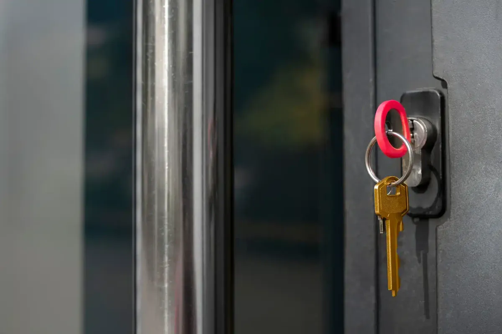
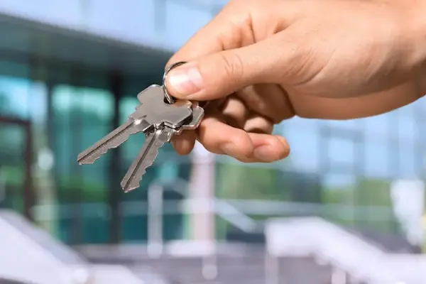

Zentralschließanlage
Jede Partei erhält einen Schlüssel, der die eigene Tür schließt und zusätzlich alle gemeinsam genutzten Türen. Nachbarwohnungen bleiben tabu. Die typische Lösung im Mehrfamilienhaus.
Ein Mehrfamilienhaus mit zwölf Parteien, eine Wohnanlage mit Tiefgarage und Müllraum, ein Betrieb mit Büro, Lager und Technikraum: Sobald viele Menschen viele Türen benutzen, wird jeder einzelne Schlüssel zum Verwaltungsproblem. Eine Schließanlage ordnet die Berechtigungen, statt die Schlüsselbunde größer zu machen.
Wir planen, montieren und dokumentieren Schließanlagen in Aachen – für Eigentümer, Hausverwaltungen und Gewerbebetriebe. Wir beraten Sie telefonisch oder vor Ort im Objekt.
Im Wohnbereich zahlt sie sich über den Alltag aus: Eine Partei, ein Schlüssel – für Haustür, Keller, Waschküche, Müllraum und die eigene Wohnung. Fremde Wohnungen bleiben verschlossen, das Schlüsselbrett beim Verwalter bleibt übersichtlich.
Im Gewerbe geht es weniger um Bequemlichkeit als um Zuständigkeiten. Wer darf ins Lager, wer in die Technik, wer nur ins Büro? Und was passiert, wenn jemand das Unternehmen verlässt? Eine geplante Anlage beantwortet diese Fragen vorab – ein über Jahre gewachsener Bestand aus Einzelschlössern beantwortet sie gar nicht.

Drei Bauarten, drei Zwecke. Welche passt, entscheidet sich an der Frage, wer im Notfall überall hineinkommen muss.
Jede Partei erhält einen Schlüssel, der die eigene Tür schließt und zusätzlich alle gemeinsam genutzten Türen. Nachbarwohnungen bleiben tabu. Die typische Lösung im Mehrfamilienhaus.
Jeder Einzelschlüssel öffnet nur seine Tür, ein Hauptschlüssel öffnet alle. Sinnvoll, wenn Verwaltung, Hausmeister oder Betriebsleitung im Ernstfall jeden Raum erreichen müssen.
Beides kombiniert und in Ebenen gegliedert: zentrale Türen für alle, Bereichsschlüssel für Abteilungen oder Häuser, ein Generalhauptschlüssel darüber. Für größere Wohnanlagen und Gewerbeobjekte.
Sagen Sie uns kurz, wie viele Türen und wie viele Schlüssel es werden sollen – erreichbar täglich bis Mitternacht, Fr & Sa bis 2 Uhr.
Wir gehen die Türen durch: Anzahl, Zylinderlängen, Beschläge – und wer welchen Zugang braucht.
Sie bekommen eine Matrix: welcher Schlüssel welche Tür öffnet. Erst wenn die stimmt, wird bestellt.
Wir setzen die Zylinder ein, prüfen jede Tür einzeln und stellen die Mechanik sauber ein.
Sie erhalten die Schlüssel nummeriert, dazu den Schließplan und den Nachweis für spätere Nachbestellungen.

Der teuerste Fehler passiert am Anfang: Die Anlage wird exakt auf den heutigen Bestand zugeschnitten. Kommt später eine Tür dazu – ausgebautes Dachgeschoss, neuer Lagerraum, Gartentor –, passt nichts mehr dazu.
Wir planen deshalb Reserve ein: freie Schließungen im Plan und Schlüssel über den aktuellen Bedarf hinaus. Der Aufpreis dafür ist klein gegenüber einer neuen Anlage.
Für die meisten Wohnobjekte ist die mechanische Anlage die wirtschaftlichere Lösung. Elektronische Systeme spielen ihre Stärke dort aus, wo Berechtigungen häufig wechseln. Wir sagen Ihnen im Gespräch, was zu Ihrem Objekt passt – und was Sie dafür nicht brauchen.
Zu jeder Anlage gehört die Frage, wer welchen Schlüssel besitzt. Auf Wunsch führen wir Ihre Anlage bei uns mit Schließplan und Schlüsselnummern. Nachbestellungen laufen dann über den hinterlegten Berechtigungsnachweis – ohne ihn fertigt niemand einen Schlüssel Ihrer Anlage nach, auch wir nicht.
Geht ein Schlüssel verloren, muss nicht zwingend alles getauscht werden. Häufig genügt es, die betroffene Schließung zu sperren und die zugehörigen Zylinder umzustellen. Den verlorenen Schlüssel vermerken wir in Ihrem Schließplan, damit darüber nichts mehr nachbestellt werden kann. Ob sich der Austausch einzelner Schlösser lohnt oder die Anlage umgestellt wird, rechnen wir Ihnen vorher durch.

Das hängt von der Anzahl der Türen ab, vom gewählten Zylindersystem und davon, wie viele Schlüssel Sie brauchen. Einen Listenpreis gibt es dafür nicht: Sie erhalten ein Angebot auf Basis des Schließplans, bevor etwas bestellt wird. Feste Preise haben wir bei der Türöffnung.
Wenn das System noch lieferbar ist und der Schließplan vorliegt, ist eine Erweiterung in der Regel möglich. Rufen Sie uns an oder schreiben Sie uns per WhatsApp und halten Sie einen Schlüssel und die vorhandenen Unterlagen bereit, dann sehen wir nach, um welches System es sich handelt.
Nicht zwangsläufig. Häufig genügt es, die betroffene Schließung zu sperren und die zugehörigen Zylinder umzustellen. Entscheidend ist, welche Türen der verlorene Schlüssel geöffnet hätte. Wir sehen uns den Schließplan an und rechnen Ihnen beide Wege vor, bevor Sie entscheiden.
Ja, über den Berechtigungsnachweis Ihrer Anlage. Ohne diesen Nachweis fertigt niemand einen Schlüssel zu einer Schließanlage nach, auch wir nicht. Genau darin liegt der Sicherheitsgewinn gegenüber einzelnen Standardschlössern.
Wenn es nur um eine einzelne Tür geht, ist meist der Schlosswechsel der richtige Weg. Brauchen Sie schlicht mehr Schlüssel für ein vorhandenes Schloss, hilft Ihnen Schlüssel nachmachen weiter. Und wenn die Tür selbst der Schwachpunkt ist, sehen wir uns Beschläge und Sicherheitstechnik an, bevor eine neue Anlage geplant wird.